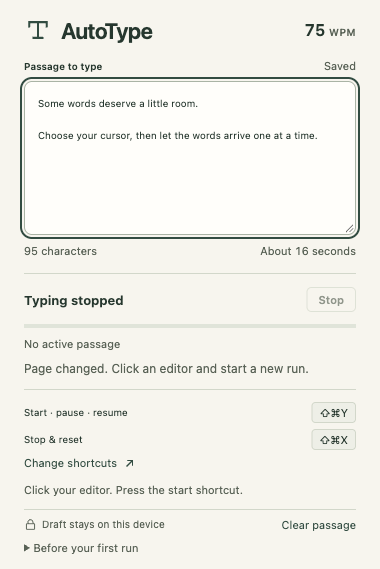

AutoType
Paste.
Click.
Type.
A prepared passage, entered at your cursor with a natural rhythm averaging 75 WPM.
Keyboard control. Local drafts.
Free, with no account or cloud sync.

Actual extension interface · macOS shortcuts shown